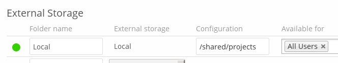

Local¶
Local storage provides the ability to mount any directory on your ownCloud server that is:
- Outside of your ownCloud
data/directory - Both readable and writable by your HTTP server user
Since this is a significant security risk, Local storage is only configurable via the ownCloud admin settings. Non-admin users cannot create Local storage mounts.
Note
See Set Strong Directory Permissions for information on correct file permissions, and find your HTTP user PHP Version and Information.
To manage Local storage, navigate to admin, and then to Storage.
You can see an example in the screenshot below.

In the Folder name field enter the folder name that you want to appear on your ownCloud Files page. In the Configuration field enter the full file path of the directory you want to mount. In the Available for field enter the users or groups who have permission to access the mount; by default all users have access.
In addition to these steps, you have to ensure that Local storage is enabled in your ownCloud installation’s config/config.php file.
It should have the following configuration:
'files_external_allow_create_new_local' => 'true',
Note
See Configuring External Storage (GUI) for additional mount options and information, and External Storage Authentication mechanisms for more information on authentication schemes.